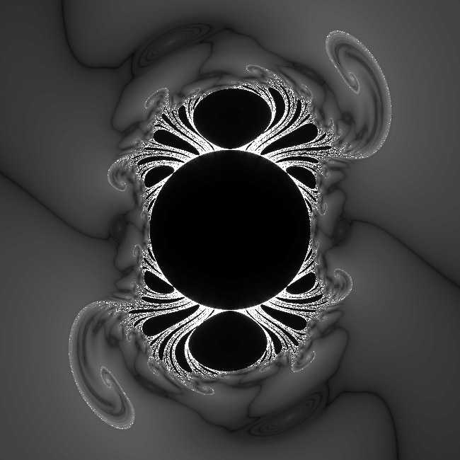

Insideout DragonAttributed to Roger Bagula
Graphics By Paul Bourke
This fractal is calculated in a similar way to the Mandelbrot, that is, a series is calculated and coloured according to how quickly it escapes to infinity. The main difference is that the series in this case is somewhat more complicated. For a coordinate (x0,y0) one forms a complex number z0 = 1 / (x0 + i y0), this becomes the first term of the series. The series is given by
 Change denominator from (1 + r3)2 to (1 + r + r7)
|